ニガテ帳
ニガテ帳
介護福祉士・社会福祉士・看護師の過去問。まちがえた問題は苦手ノートに残って、2回続けて正解すると消えます。
リズムで ぽん! のミニゲーム集。画面を見て、その拍でたたくだけ。曲ごとに場面がまるごと変わります。
ブラウザで遊ぶ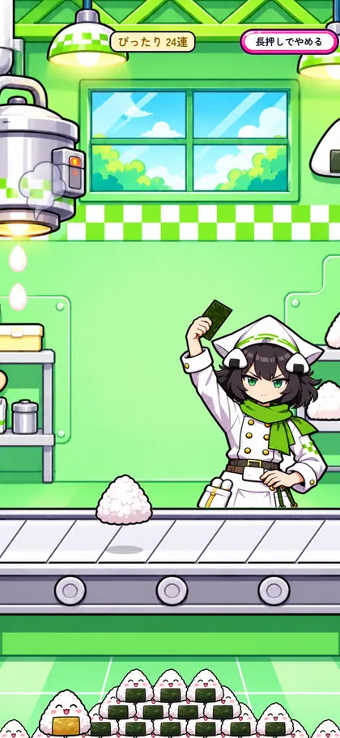
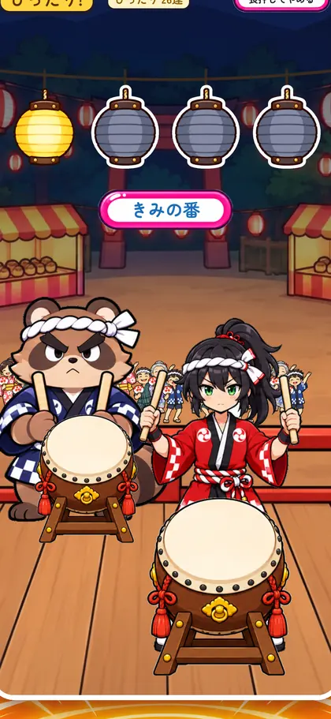
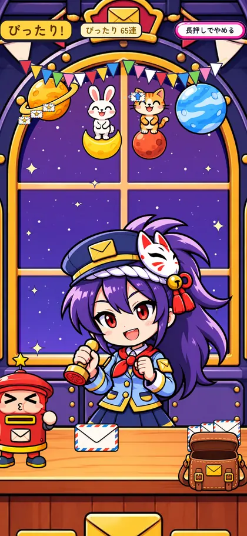

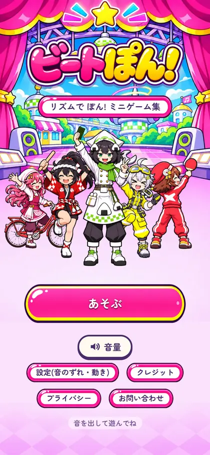

野手の目で打球を追って守る野球ゲームです。試合を観ながら、球場の中を歩いて回ることもできます。
ブラウザで遊ぶブラウザで遊べるのは浜風の球場です。iPhone 版も配信中、Android は近日公開。


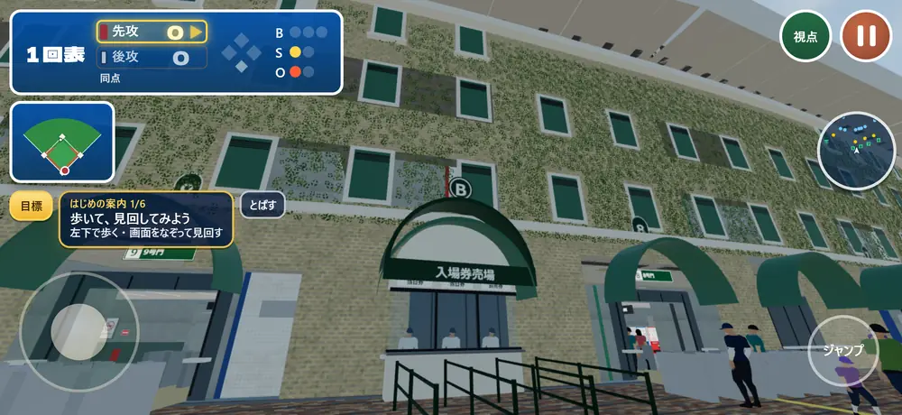
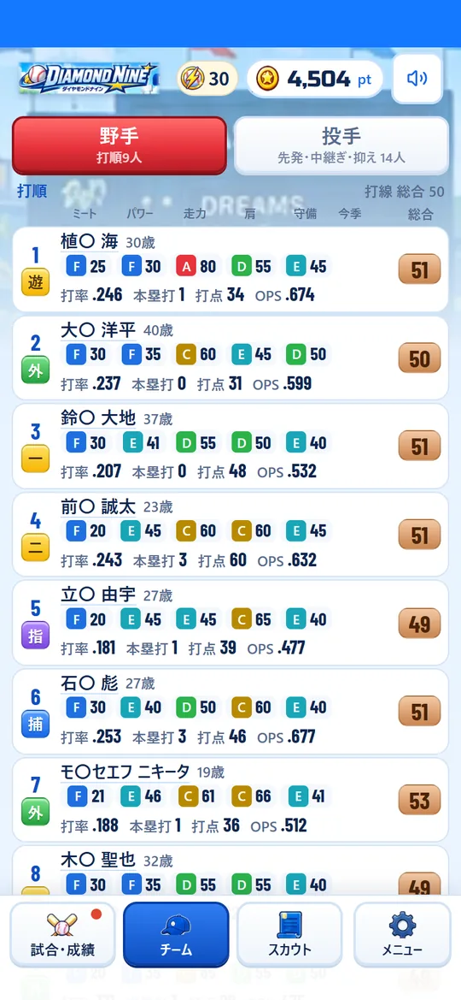
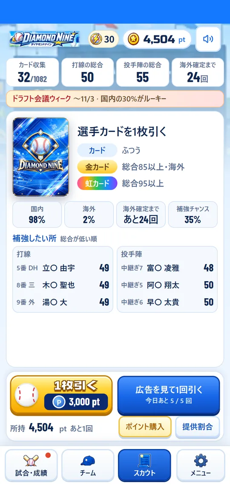
介護福祉士・社会福祉士・看護師の過去問。まちがえた問題は苦手ノートに残って、2回続けて正解すると消えます。
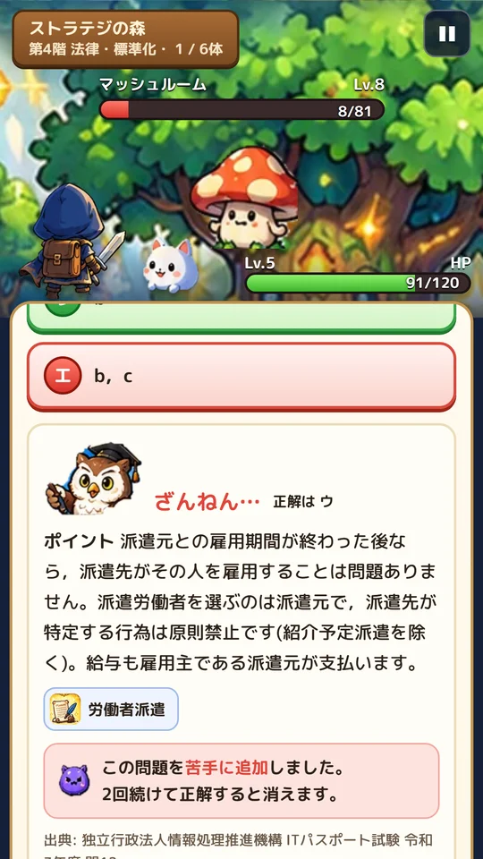
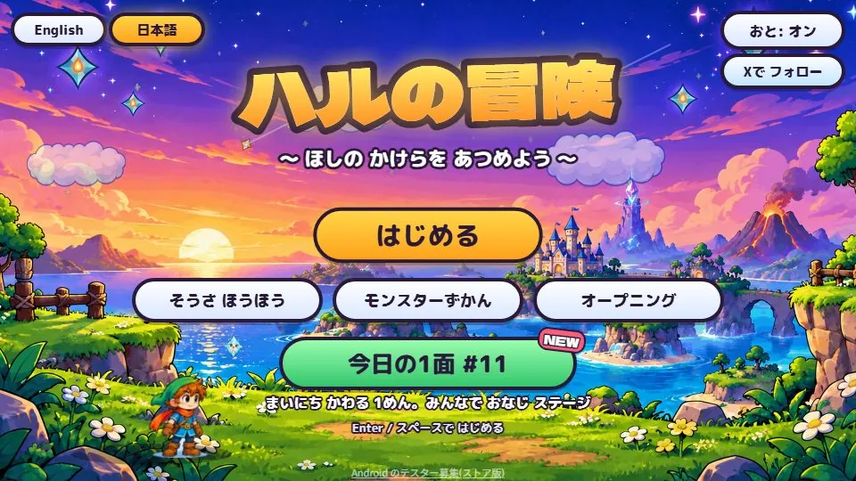
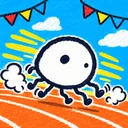
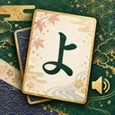
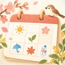
本業は社内SEです。1人でスマホアプリとゲームを作っています。
アプリ作りにハマって、たくさん作ってます。野球好きなので、野球ゲームが多めです。
Android の相互テスト歓迎です。テスター用のグループ